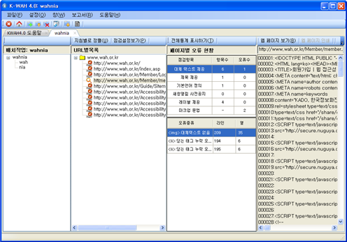

배치작업 점검 결과보기
- [배치작업 점검 결과 창] 배치작업 점검 결과는 페이지 탭에 다음 그림과 같이 4개의 컬럼으로 표시됩니다. 또한 각 컬럼은 두개의 영역으로 구분되기도 합니다.

- 프로젝트 목록 : 첫번 째 컬럼은 배치작업을 구성하는 프로젝트 목록을 트리구조로 보여줍니다. 트리의 루트 노드는 배치작업명입니다. 아래 그림은 배치작업명이 "wahnia"입니다.
- URL별 목록/지침별 목록(alt+U) : 두번 째 컬럼은 선택된 프로젝트를 위하여 평가된 웹 페이지를 두가지 방법으로 표시합니다. 두번째 컬럼의 지침별로 정렬/URL별로 정렬을 선택할 때마다 각각 URL별 목록 또는 지침별 목록으로 전환됩니다.
- 지침별 목록: 프로젝트 점검 결과 지침별(또는 점검 규칙별)로 오류가 있는 웹페이지를 트리구조로 표시합니다.
- URL별 목록: 프로젝트 점검 결과를 웹페이지를 점검한 순서로 URL을 표시합니다. 이때 URL목록은 오류 발생 여부와 관계없이 모두 표시합니다. 오류가 발생했는지를 구분하기 위하여 URL 앞에 (X)표시가 된 것은 오류가 발견되었다는 표시입니다. 오류가 없는 URL에는 이 표시가 없습니다.
- 점검설정보기(alt+P): 점검설정보기 아이콘을 클릭하면 해당 프로젝트를 실행했던 점검 옵션을 확인할 수 있습니다.
- 페이지별 오류 현황: 이 컬럼은 두개의 영역으로 구분됩니다.
- 첫번 째 영역: 이 영역은 프로젝트 전체 또는 URL별로 점검항목별 항목수와 오류 수를 요약하여 보여 줍니다. 두번째 컬럼에서 루트 노드(프로젝트 대표 URL)를 선택하면 프로젝트 전체 오류 수를 나타냅니다. 개별 URL을 선택했을 경우에는 해당 웹페이지의 오류 수를 표시합니다.
- 두번 째 영역: 두번 째 영역은 URL별로 발견된 오류를 모두 보여 줍니다. 프로젝트를 선택하였을 경우에는 이 영역은 아무런 정보를 제공하지 않습니다.
- 페이지 통계표시하기/전체통계표시하기(alt+T): 첫번 째 영역에 표시되는 정보의 표시방법을 토글합니다. [페이지 통계표시하기]는 첫번 째 영역에 URL페이지에 대한 점검 항목별 오류 내역을 표시합니다. [전체통계표시하기]는 프로벡트 전체의 오류 수를 점검 항목별로 표시합니다.
- 소스 보기/웹페이지 보기 : 이 컬럼은 선택된 URL에 대한 소스를 보여 줍니다. 이때 [웹 페이지 보기] 버튼을 클릭하면 해당 웹페이지의 렌더링 이미지를 볼 수 있습니다. 또한 오류보기 영역에서 오류 항목을 선택하면 소스코드 영역의 해당 위치가 하이라이트 되어 오류내역과 소스의 관계를 편리하게 확인할 수 있습니다.
- [소스 보기 주요 기능] 소스 보기와 관련하여 다음과 같은 여러 가지 기능을 제공합니다. 괄호 속은 단축키를 의미합니다. 여기서 ^P는 Ctrl + P를 의미합니다.
- 소스 인쇄(alt+P): 소스를 인쇄할 수 있습니다.
- 찾기 기능(alt+F): 소스에서 주어진 문자열에 대한 찾기 기능을 제공합니다. 이 기능을 실행하면 문자열 찾기 창이 소스코드 영역의 상단에 나타나 찾기 기능을 실행할 수 있습니다. 자세한 사용법은 접근성 기능을 참고하시기 바랍니다.
- 소스 복사(alt+C 또는 Ctrl+C): 소스를 클립보드로 복사할 수 있습니다. 소스를 복사할 때에는 필요에 따라 라인번호를 함께 복사하거나 라인번호를 뺀 소스만을 복사할 수 있습니다.
- URL복사(alt+U): 화면에 표시된 소스를 다운받았던 URL을 클립보드로 복사할 수 있습니다.
- 웹브라우저 열기(alt+B): 선택된 URL의 웹페이지 이미지를 보여줍니다. 실제 웹브라우저에 렌더링된 결과를 확인하려면 웹브라우저 창의 [팝업] 버튼을 누릅니다.
- 웹페이지 인쇄: 렌더링된 웹페이지를 인쇄합니다. 이 기능은 주메뉴 [편집]-[인쇄]-[웹페이지(W)]를 차례로 선택하여 수행할 수 있습니다.
- [요약 보고서 보기] 점검결과 보기 창이 열린 상태에서 프로젝트 보고서 및 수집 페이지별 오류 결과 보고서를 화면으로 확인하거나 인쇄할 수 있습니다. 보고서 형식과 사용법은 왼쪽 메뉴의 4. 보고서 보기/인쇄를 클릭하십시오.
- 자동점검결과 요약 보고서: 이 보고서를 화면에 표시하려면 메뉴 [보고서]-[프로젝트 보고서]를 차례로 클릭합니다. 직접 인쇄하려면 메뉴 [파일]-[인쇄]-[프로젝트 보고서] 를 차례로 클릭합니다.
- 수집 페이지 목록별 점검 결과 요약 보고서: 이 보고서를 화면에 표시하려면 메뉴 [보고서]-[수집 URL목록]을 차례로 클릭합니다. 직접 인쇄하려면 메뉴 [파일]-[인쇄]-[수집 URL목록] 를 차례로 선택합니다.